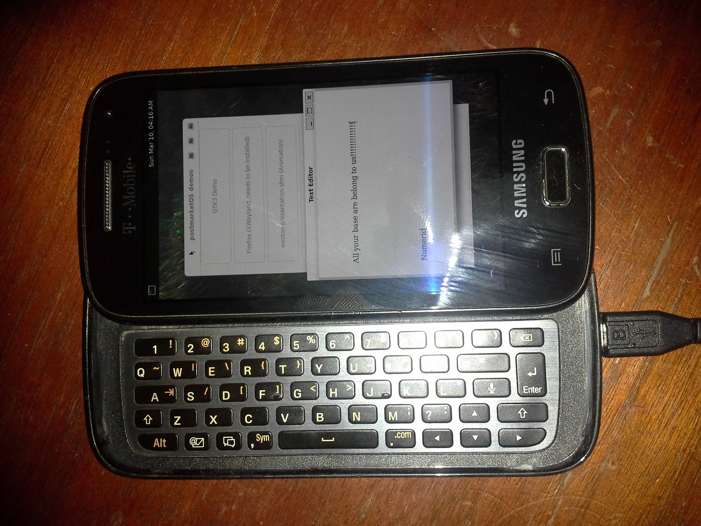

Samsung Galaxy S Relay 4G (samsung-apexq)
Jump to navigation
Jump to search
| This device is still running on armhf, although the processor supports armv7. If you own it, change it and test it that way. |
|
 Samsung Galaxy S Relay 4G | |
| Manufacturer | Samsung |
|---|---|
| Name | Galaxy S Relay 4G |
| Codename | samsung-apexq |
| Released | 2012 |
| Category | testing |
| Original software | Android 4.0.4 ICS |
| Hardware | |
| Chipset | Qualcomm Snapdragon S4 Plus (MSM8960) |
| CPU | 1.5 GHz dual-core Krait |
| GPU | Adreno 225 |
| Display | 480x800 Super AMOLED |
| Storage | 8 GB |
| Memory | 1 GB |
| Architecture | armv7 |
{kind=link}
| USB Networking |
Works
|
|---|---|
| Flashing |
Works
|
| Touchscreen |
Works
|
| Display |
Works
|
| WiFi |
Works
|
| FDE | |
| Mainline | |
| Battery |
Works
|
| 3D Acceleration | |
| Audio | |
| Bluetooth | |
| Camera | |
| GPS | |
| Mobile data | |
| SMS | |
| Calls | |
| USB OTG | |
| NFC | |
| Accelerometer | |
|---|---|
| Magnetometer | |
| Ambient Light | |
| Proximity | |
| Hall Effect | |
| Barometer | |
| Power Sensor | |
| Camera Flash | |
|---|---|
| Keyboard | |
| Touchpad | |
| USB-A | |
| HDMI/DP | |
| Ir TX | |
| Ir RX | |
| Stylus | |
| Haptics | |
| Ethernet | |
| FOSS bootloader | |
Status: Boots. Wifi works. Keyboard symbols mapping and screen rotation not working.
Contributors
- silver
Maintainer(s)
- silver
Installation
First Install pmbootstrap
Now set it up for a samsung apexq
pmbootstrap init Vendor: samsung Device codename: apexq User interface: mate
When done with that run
pmbootstrap install
Now put it in download mode. You will need to do this twice during the flashing step.
Set phone to ODIN mode
1. Turn off phone 2. Connect USB cable 3. Hold VOLUME_DOWN + HOME + POWER until you get Warning!! screen 4. Push VOLUME_UP to continue to ODIN mode screen
pmbootstrap flasher flash_kernel
Phone will reboot. Follow above instructions again. It's easiest to just hold volddown and home while the kernel progress is shown instead of powering off in between flashes.
pmbootstrap flasher flash_rootfs
The device will then reboot into postmarketos
Port information
- kernel android_kernel_samsung_d2
- commit 3795379ed3f846bf17908ff29576a93caff5d1d7
- defconfig LineageOS/android_kernel_samsung_d2/87f5fcaf7afef878914c3fcca2c2fd395f285902/arch/arm/configs/cyanogen_apexq_defconfig
- deviceinfo populated with boot.img from cm backup March 2017